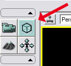

UDN
Search public documentation:
EditorButtonsCH
English Translation
日本語訳
한국어
Interested in the Unreal Engine?
Visit the Unreal Technology site.
Looking for jobs and company info?
Check out the Epic games site.
Questions about support via UDN?
Contact the UDN Staff
日本語訳
한국어
Interested in the Unreal Engine?
Visit the Unreal Technology site.
Looking for jobs and company info?
Check out the Epic games site.
Questions about support via UDN?
Contact the UDN Staff
编辑器按钮参考指南
快速参考指南卡片
基本的编辑器应用
所有视窗模式（3D、XY、YZ、XZ 视图）
- LMB （悬停在 actor 上的时候） | 选择 actor
- 双击 LMB 或 F4 （如果在 actor 上） | 打开 actor 属性菜单
- RMB | 打开关联菜单
- Shift-D 或 Ctrl-W | 复制选中的对象
选中一个对象后
- Del | 删除当前对象
- LMB （鼠标没有悬停在任何对象上的时候） | 取消选择当前对象
- Shift + 通过使用运动窗体部件拖拽 actor | 在移动 actor 的同时移动视窗
- Space bar（空格键） | 在 xyz 运动窗体部件（标准）、旋转窗体部件和自由缩放窗体部件之间循环切换
- Alt + 通过使用运动窗体部件拖拽 actor | 创建选中的 actor 的副本并移动它
- RMB （在画刷顶点上） | 将画刷原点更改为选中的顶点
- Home | 将所有视窗相机与所选的 actor 对齐
- Shift + Home | 只将活动的视窗相机与所选的 actor 对齐
- End | 将所选 actor 吸附到地面
- Ctrl + End | 将所选 actor 移动返回到单元格线。
- Ctrl-G | 选择所有其他属于同一个组的 actor，将其作为当前选中的 actor。
- Alt + 光标键 | 微移所选 actor 的位置
- M | 使所选 actor 的关卡成为当前关卡。
- Ctrl + M | 将所选 actor 移动到当前关卡。
- (新) Ctrl + K | 在 Kismet 中找到所选 actor。
- (新) Ctrl + Shift + A | 选择所有与当前所选 actor 具有相同的类的 actor。*注意：* 诸如 Trillian 这样的 IM 程序可能会对这样的快捷方式产生干扰。
- (新) Ctrl + B | 使用通用浏览器同步当前所选的 actor。
- (新) Escape | 取消选择所有选项，并关闭任何打开的 actor 属性窗口。
构建画刷-专用
- Ctrl-A | 添加画刷
- Ctrl-S | 挖空画刷
- Ctrl-I | 画刷取交集
- Ctrl-D | 画刷取反交集
正交视窗（XY、YZ、XZ 视图）
- LMB （在 BSP 画刷边缘） | 选择 BSP 画刷
- Ctrl + Alt + LMB | 框选
- LMB 或 RMB + 任意方向 | 在鼠标运动的方向移动相机
- MMB + 任意方向 | 以游戏单位测量距离
- LMB & RMB + 上/下 | 放大/缩小
- Ctrl + MMB | 在当前相机位置排列所有相机
- (新) Alt + MMB | 将支点吸附到点击的位置。 忽略多有选中的对象以及在点击过程中发生的一切事件。
选中一个对象后
- Ctrl + LMB + 任意方向 | 移动所选对象
- Ctrl + Shift + LMB + 任意方向 | 移动所选对象和视窗相机
- Ctrl + RMB + 任意方向 | 自由旋转所选对象
- 光标键 | 微移所选 actor 的位置
透视图视窗（非正交 3D 视图）
- LMB + 任意方向 | 偏移 (L/R) 及向前和向后移动 (U/D)
- RMB + 任意方向 | 自由相机运动
- LMB & RMB + 任意方向 | 向上 & 向下（Z 轴）或向左 & 向右（相对 X 轴）旋转相机
- LMB（在 BSP 画刷上） | 选择画刷表面
- Ctrl + Shift + LMB（在 BSP 画刷上） | 选择 BSP 画刷
- Alt + RMB （鼠标悬停在画刷表面上时） | 将表面贴图复制到“贴图剪贴板”
- Alt + LMB （鼠标悬停在画刷表面上时） | 将贴图粘贴（应用）到表面
- Shift + Alt + LMB （位于画刷表面上时） | 将贴图粘贴（应用）到多个选择的画刷表面
- Ctrl + Alt + LMB （位于画刷表面上时） | 将贴图和贴图坐标粘贴（应用）到表面
- 光标键 | 微移相机位置
- NumPad 1 或 NumPad3 | 更改透视相机视角
选择画刷表面后
- Shift + B | 在该 Brush（画刷） 上选择所有表面
- Shift + S | 在关卡中选择所有画刷 Surface（表面）
- Shift + Q | 选择该画刷的所有表面，当前选择的那个表面除外
- Shift + J | 选择所有 adjacent（相邻） 表面
- Shift + W | 选择所有相邻的 Wall（墙壁） 表面
- Shift + T | 选择所有具有相同 Texture（贴图） 的表面
- Shift + N | 取消选择所有表面（选择 *Nothing（无）*）
- (新) Ctrl + Shift + F | 在所选表面的多边形上‘装配’贴图（在没有平铺显示 UV 的情况下）
地形编辑特定按键
几何体模式介绍

下面是您将会发现的几何体编辑选项，与很多流行的 3d 建模程序中使用的选项相似，如下所示： 请参阅 GettingStartedWithGeometryMode 详细了解如何使用这个新功能的描述信息！
请参阅 GettingStartedWithGeometryMode 详细了解如何使用这个新功能的描述信息！
渲染模式
- Alt-1 | 画刷线框渲染模式
- Alt-2 | 线框渲染模式
- Alt-3 | 不带光照渲染模式
- Alt-4 | 光照渲染模式
- Alt-5 | 纯光照渲染模式
- Alt-6 | 光照复杂度渲染模式
编辑器模式
- Shift-1 | 相机模式 - 默认编辑器模式
- Shift-2 | 几何体模式 - 编辑 BSP 画刷
- Shift-3 | 地形模式 - 创建并控制地形
- Shift-4 | 贴图平移模式 - 与表面属性结合使用，正确地将贴图排列到 BSP 画刷上
相机书签
- Ctrl-数字键 | 标记当前的相机位置。
- 数字键 | 把相机移动到特定的标记位置的书签处。
Maya 相机工具
- LMB + 任意方向 | 围绕着选中的 actor 或试图进行旋转。
- MMB + 任意方向 | 平移相机
- RMB + Down | 拉伸镜头
- RMB + Up | 收缩镜头
高级快捷键
- A + LMB | 添加当前选中的（从 actor 浏览器菜单中） actor。
- B | 切换构建画刷的 打开/关闭 状态。
- C | 切换碰撞圆柱体的 打开/关闭 状态。
- D | 切换视口实时模式的 打开/关闭 状态。
- D + LMB | 在通用浏览器中选中一个材质，将会把那个材质作为一个贴花放置在世界中。
- E | 切换贴花的 打开/关闭 状态。
- F | 切换雾的 打开/关闭 状态。
- G | 切换在游戏播放时不可见物体的可视状态。
- H | 切换“仅显示 BSP 和光照”模式
- K | 切换 Kismet 引用框的 打开/关闭 状态。
- L + LMB | 在选中的位置放置光源 actor。
- N | 切换导航节点的 打开/关闭 状态。
- O | 切换体积的 打开/关闭 状态。
- Q | 切换 BSP 的 打开/关闭 状态。
- R | 切换 光源/音频 半径的 可见/不可见 状态。
- S + LMB | 在通用浏览器中选中一个静态网物体的情况下，将会把那个网格物体放置到世界中。
- T | 切换地形的 打开/关闭 状态。
- W | 切换静态网格物体和骨架网格物体的 打开/关闭 状态。
- Ctrl + P | 复制选中的多边形到构建画刷。
- Ctrl-R | 切换实时窗口的更新。
- Shift-A | 选择所有
- F4 | 查看 Actor 属性
- F5 | 查看表面属性
- 鼠标滚轮 | 缩放选中的视口
- . * *. + LMB | 在选中的位置处放置路径节点
- , + LMB | 在选中的位置处放置掩体连接
- [ | 降低网格尺寸
- ] | 升高网格尺寸
- (新) ~ | 切换在‘世界坐标系’和‘本地坐标系’间切换控件坐标系统
其他帮助 & 技巧
- (新) 按下 F9 并左击视口将会对那个视口进行截图。 这可以用于对任何编辑器视口进行截图（Matinee、材质编辑器、关卡视口等）。
- 现在缩放工具可以用于修改光源、贴花及冲力 actor 的尺寸/半径。
- 当使用缩放工具修改聚光源时，正常地缩放光源将会影响光源半径。Ctrl+ 缩放 可以改变外锥角，Alt+ 缩放可以改变内锥角。
- 现在缩放工具也可以用于修改环境声音的半径。Scaling（缩放工具）控制最大半径，Ctrl+缩放工具 控制着最小半径。
- 现在可以通过在通用浏览器中选择一个声音波形，然后在您的世界中右击并选择 Add Actor(添加Actor) -> 添加 AmbientSoundSimple来把AmbientSoundSimple actor 放置到关卡中。
- 在任何编辑器属性窗口中，使用鼠标右键点击属性窗口项将会展开在其下面的所有项。
- (新) 通过在任何编辑器属性窗口中按下 shift 键并点击某个属性来标记该属性。 现在，右击并选择‘通过属性选择’来选择所有匹配属性值的 actor。 类似地，‘属性着色’视图模式将会着色为和具有红色的 actor 相匹配的颜色。